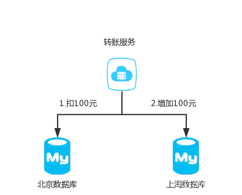
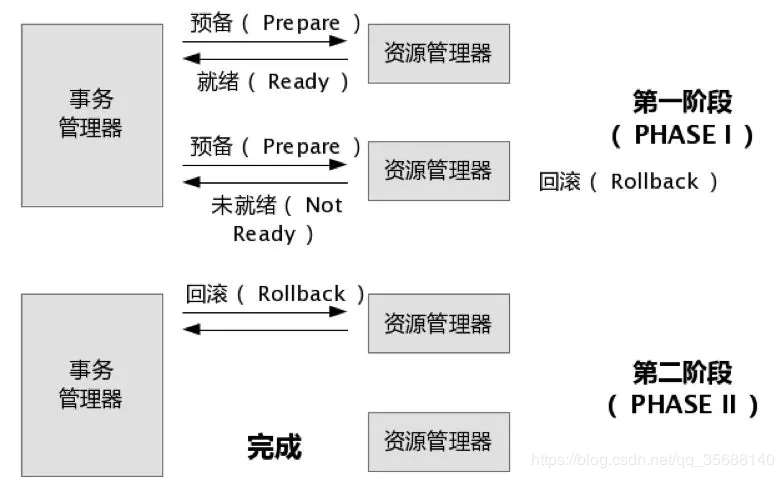
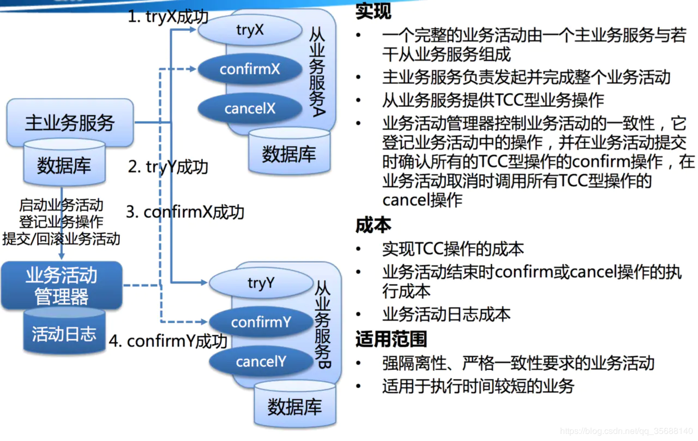
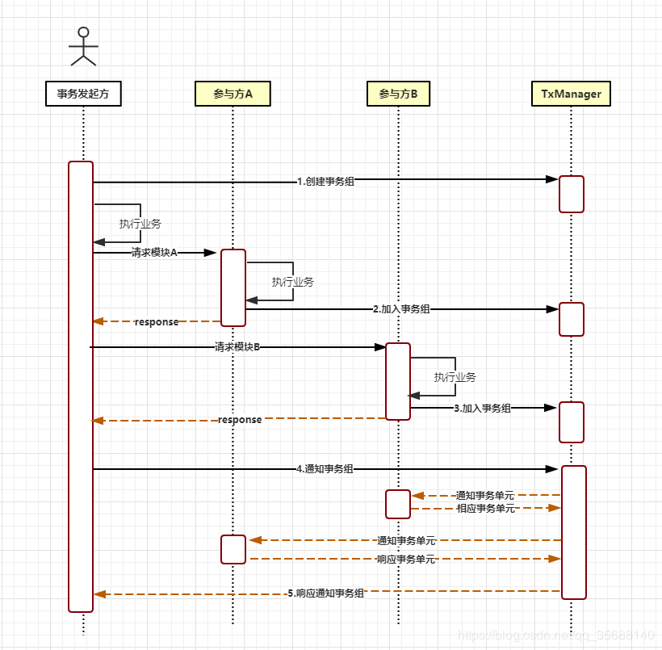

分布式事务及其解决方案
分布式事务出现的场景
当北京的数据库向上海的数据库转账时，怎么保证转账的事务性？这就出现了分布式事务的问题。
下面来讨论一下分布式事务的解决方案，主要包括：两阶段提交，TCC和tx-lcn框架。

2PC
下面就是两阶段提交的过程：

第一阶段：
事务管理器要求每个涉及到事务的数据库预提交(precommit)此操作，并反映是否可以提交.
第二阶段：
事务协调器要求每个数据库提交数据，或者回滚数据。
缺点
单点问题
事务管理器在整个流程中扮演的角色很关键，如果其宕机，比如在第一阶段已经完成，在第二阶段正准备提交的时候事务管理器宕机，资源管理器就会一直阻塞，导致数据库无法使用。
同步阻塞
在准备就绪之后，资源管理器中的资源一直处于阻塞，直到提交完成，释放资源。
数据不一致
两阶段提交协议虽然为分布式数据强一致性所设计，但仍然存在数据不一致性的可能，比如在第二阶段中，假设协调者发出了事务commit的通知，但是因为网络问题该通知仅被一部分参与者所收到并执行了commit操作，其余的参与者则因为没有收到通知一直处于阻塞状态，这时候就产生了数据的不一致性。
TCC
tcc就是将提交分为了3步：

对于TCC的解释:
Try阶段
尝试执行,完成所有业务检查（一致性）,预留必须业务资源（准隔离性）
Confirm阶段
确认执行真正执行业务，不作任何业务检查，只使用Try阶段预留的业务资源，Confirm操作满足幂等性。要求具备幂等设计，Confirm失败后需要进行重试。
Cancel阶段
取消执行，释放Try阶段预留的业务资源
Cancel操作满足幂等性Cancel阶段的异常和Confirm阶段异常处理方案基本上一致。
对于TCC来说适合一些:
强隔离性，严格一致性要求的活动业务。
执行时间较短的业务
tx-lcn框架
至于tx-lcn的使用,参考官方文档 :http://www.txlcn.org/zh-cn/docs/demo/env.html
事务控制的原理：
TX-LCN由两大模块组成, TxClient、TxManager，TxClient作为模块的依赖框架，提供TX-LCN的标准支持，TxManager作为分布式事务的控制方。事务发起方或者参与反都由TxClient端来控制。

模式一：lcn
LCN模式是通过代理Connection的方式实现对本地事务的操作，然后在由TxManager统一协调控制事务。当本地事务提交回滚或者关闭连接时将会执行假操作，该代理的连接将由LCN连接池管理。
缺点：
该模式对代码的嵌入性为低。
该模式仅限于本地存在连接对象且可通过连接对象控制事务的模块。
该模式下的事务提交与回滚是由本地事务方控制，对于数据一致性上有较高的保障。
该模式缺陷在于代理的连接需要随事务发起方一共释放连接，增加了连接占用的时间。
模式二：tcc
TCC事务机制相对于传统事务机制（X/Open XA Two-Phase-Commit），其特征在于它不依赖资源管理器(RM)对XA的支持，而是通过对（由业务系统提供的）业务逻辑的调度来实现分布式事务。主要由三步操作，Try: 尝试执行业务、 Confirm:确认执行业务、 Cancel: 取消执行业务。
缺点：
该模式对代码的嵌入性高，要求每个业务需要写三种步骤的操作。
该模式对有无本地事务控制都可以支持使用面广。
数据一致性控制几乎完全由开发者控制，对业务开发难度要求高。
模式三:txc
TXC模式命名来源于淘宝，实现原理是在执行SQL之前，先查询SQL的影响数据，然后保存执行的SQL快走信息和创建锁。当需要回滚的时候就采用这些记录数据回滚数据库，目前锁实现依赖redis分布式锁控制。
缺点：
该模式同样对代码的嵌入性低。
该模式仅限于对支持SQL方式的模块支持。
该模式由于每次执行SQL之前需要先查询影响数据，因此相比LCN模式消耗资源与时间要多。
该模式不会占用数据库的连接资源。